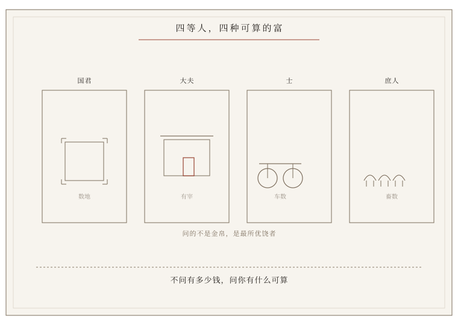

曲礼下 · 二·六十五 · 第 188 课
问国君之富，数地以对，山泽之所出；问大夫之富，曰有宰食力，祭器衣服不假；问士之富，以车数对；问庶人之富，数畜以对。注「皆在其所制以多少对」。
说什么事：四等问富，四种衡量的尺度。
落在哪一层：礼，兼及礼意。论富之量法。
为何编在此位：上节问年，此节问富。两节同法：不问其所有，问其所能与所依。
【经】問國君之富，數地以對，山澤之所出。問大夫之富，曰：「有宰食力，祭器衣服不假。」問士之富，以車數對。問庶人之富，數畜以對。
【注】皆在其所制以多少對。宰，邑士也。食力，謂民之賦稅。
【疏】谓问诸侯之臣，求知其君封内土地所出也。云富者，非问其多金帛，正是问最所优饶者也。不问天子者，率土之物莫非王有，天下共见，故不须问，而诸侯止一国，故致问也。「数地以对」者，首芰地广狭对之也。「山泽之所出」者，又以鱼、盐、蜃、蛤、金、银、锡、石之属，随有而对也。晋文公谓楚成王曰「羽、毛、齿、革，君地生焉」是也。「有宰食力」者，宰，邑宰也，有宰，明有采地，即「公山弗扰为季氏宰」是也；食力，谓食民下赋税之力也。「祭器衣服不假」者，谓四命大夫也，衣服，祭服也；若四命大夫，得自造祭器衣服，故云「不假」；若三命以下，有田者造而不备，则假借也。「问士之富，以车数对」者，士有地不多，亦无邑宰，故其属吏但以其车数对也；上士三命，则得赐车马，副车随命；中士乘栈车，无副车也。「问庶人之富，数畜以对」者，谓鸡豚之属。《闾师》云：「凡庶民，不畜者祭无牲，不耕者祭无盛，不树者无椁，不蚕者不帛，不绩者不衰。」故以畜数对。郑注《周礼》云「始养曰畜，将用之曰牲」。
富 疏「非问其多金帛，正是问最所优饶者」。
数地 数其地之广狭。
宰 注「邑士也」，即邑宰。有宰则明有采地。
食力 注「谓民之赋税」。食民力所出。
不假 不假借于人，自造。
畜 注「始养曰畜」。
问国君之富，就数他的土地与山泽所出。问大夫之富，答「有邑宰、食民赋税，祭器祭服都自己造，不借」。问士之富，以车的数目对。问庶人之富，以牲畜的数目对。
四等人，四种「富」。国君之富在地，大夫之富在采与自备，士之富在车，庶人之富在畜。礼不问「有多少钱」，问「你有什么可算」。
第一层 富非金帛 疏一句最要：「非问其多金帛，正是问最所优饶者」。礼的富是可数之物，不是可藏之财。
第二层 不问天子 疏「率土之物，莫非王有，天下共见，故不须问」。天子之富无可问，因为无处不是他的。此与上节「天子之年不可言」同一理：至尊者，无可问亦无可答。
第三层 有宰与不假 大夫之富不在田，在「有宰」「食力」「不假」三事：有采地、有赋税、能自造祭器。三者合起来才是大夫之富，即一个能自立的家。
第四层 车与畜 士以车数，庶人以畜数。一为出行之具，一为祭祀之资。所数者都是「能做什么」的凭据，不是「有多少」的堆垛。
与今日何干 衡量一个人的家底，看的不该是存款，而是他能自立到什么程度。
| 左 | 右 |
|---|---|
| 问国君之富 | 数地以对，山泽之所出 |
| 问大夫之富 | 有宰食力，祭器衣服不假 |
| 问士之富 | 以车数对 |
| 问庶人之富 | 数畜以对 |
| 不问天子之富 | 率土莫非王有 |
| 富者，最所优饶 | 非多金帛 |
画四格横排，各一格一物：第一格一片方形地片，四角各出短纹（示疆界）；第二格一座小邑形（一道方墙加一门），墙内一枚小点；第三格一辆双轮小车（两圆加一横）；第四格三只小兽形（只画背线与四足）。四格等距，格与格间以细竖线分隔。不写文字、不画人。赭色只用在第二格那扇小门。
